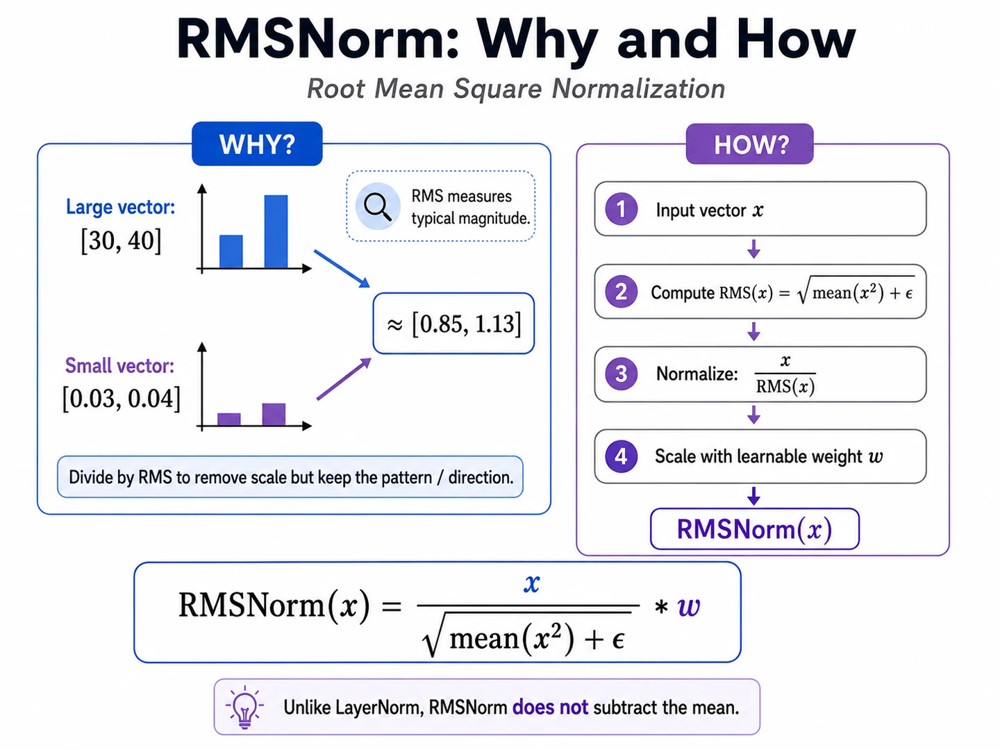

Lesson 16 of 23 · Transformer block
Normalize across features, one token at a time.
Your win: calculate a normalized token vector and distinguish LayerNorm, RMSNorm, Pre-LN, and Post-LN.
14 minutes Needs: mean and square root Outcome: calculate \(\operatorname{Norm}(x)\)
Mission link: the depicted block is pre-norm: it normalizes the current hidden state before attention and before the feed-forward sublayer.
LayerNorm
For one token vector \(\mathbf x\in\mathbb R^d\), calculate statistics across its \(d\) features:
\[
\mu=\frac1d\sum_{r=1}^d x_r,\qquad
\sigma^2=\frac1d\sum_{r=1}^d(x_r-\mu)^2,
\qquad
\operatorname{LN}(\mathbf x)=\gamma\odot\frac{\mathbf x-\mu}{\sqrt{\sigma^2+\varepsilon}}+\beta.
\]
Numbers substituted: \(\mathbf x=(1,2,3)\)
\[
\mu=2,\qquad
\sigma^2=\frac{(1-2)^2+(2-2)^2+(3-2)^2}{3}=\frac23.
\]
Ignoring tiny \(\varepsilon\) and taking \(\gamma=1,\beta=0\):
\[
\operatorname{LN}(1,2,3)
=\frac{(-1,0,1)}{\sqrt{2/3}}
\approx(-1.225,0,1.225).
\]
RMSNorm: scale without centering
\[
\operatorname{RMS}(\mathbf x)=\sqrt{\frac1d\sum_{r=1}^d x_r^2+\varepsilon},
\qquad
\operatorname{RMSNorm}(\mathbf x)=\gamma\odot\frac{\mathbf x}{\operatorname{RMS}(\mathbf x)}.
\]
For \((1,2,3)\), \(\operatorname{RMS}=\sqrt{14/3}\approx2.160\), so the unscaled output is approximately \((0.463,0.926,1.389)\). Unlike LayerNorm, its mean is not forced to zero.

RMSNorm rescales each token across its feature axis. The batch and sequence axes stay separate, and the output keeps the same \([B,T,D]\) shape.
Placement is a separate choice
Pre-LN, as depicted \(Y=X+F(\operatorname{Norm}(X))\)
Normalize before the sublayer.
Original Post-LN \(Y=\operatorname{Norm}(X+F(X))\)
Normalize after residual addition.
LayerNorm vs RMSNorm asks what computation? Pre-LN vs Post-LN asks where is it placed?
Code checkpoint · RMSNorm over the last axis
MiniMind uses RMSNorm. Notice that mean(dim=-1) reduces only the feature axis, independently for every batch item and token.
Show the RMSNorm module class RMSNorm(nn.Module):
def __init__(self, width, eps=1e-6):
super().__init__()
self.eps = eps
self.weight = nn.Parameter(torch.ones(width))
def forward(self, x):
rms = torch.rsqrt(
x.float().pow(2).mean(dim=-1, keepdim=True) + self.eps
)
return (x.float() * rms * self.weight).to(dtype=x.dtype)Trace it: For x.shape == [2, 3, 8], what is the shape of rms after keepdim=True?
Retrieval check
Which axis supplies the mean and variance for one token?
A · feature axis B · token axis
Practice before moving on
Compute the mean and variance of \((2,2,4,4)\).
Normalize \((2,2,4,4)\) with LayerNorm, ignoring \(\varepsilon\), \(\gamma=1\), and \(\beta=0\).
Compute the RMS of \((3,4)\).
State whether RMSNorm subtracts the mean.
Rewrite “normalize, attend, add the original” as one Pre-LN formula.
Does normalization change the tensor shape? Explain.
Check solutions \(\mu=3,\sigma^2=1\). \((-1,-1,1,1)\). \(\sqrt{(9+16)/2}=\sqrt{12.5}\approx3.536\). No. \(Y=X+\operatorname{Attention}(\operatorname{Norm}(X))\). No; it transforms feature values but preserves every axis length.
Primary sources: Ba et al., Layer Normalization ; Zhang and Sennrich, RMSNorm ; Xiong et al., Pre-LN vs Post-LN .
Ask the teaching agent to check one normalization calculation before advancing.
← Tensor shapes Next: Q, K, V →